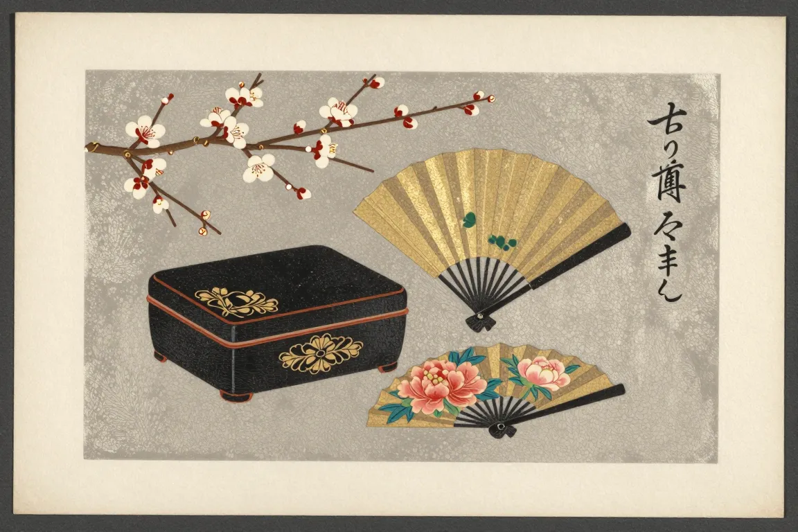

Poetry clubs paid for small woodblock prints as New Year cards and as notices of events. The patrons paid, so the printers used costly pigment, metal dust, embossing and burnish on thick paper.

Core thesis
A print made for a closed circle of friends, not for the market, can spend its whole cost on material and on fine cut.
Design principles
Print a small sheet, square or oblong, about 130–210 mm on a side.
Write the verse in calligraphy beside the image, and let it share the space with the picture.
Choose a still life of fans, shells, fruit or flowers that carries a pun or a seasonal sign for the poem.
Sprinkle gold or silver dust, or print mica, on 5–20 percent of the picture, for light and water.
Press a bare block (karazuri) into the sheet to raise a feather, a petal or a pattern.
Burnish the black areas with a baren until they shine.
Cut each outline finer than a commercial print, and print each colour with care.
Anti-patterns
A large poster format
Cheap, bright colour with no metal or emboss
A heavy outline in the manner of a comic
A halftone dot or a photograph
Flat matt colour with no raised or shining surface